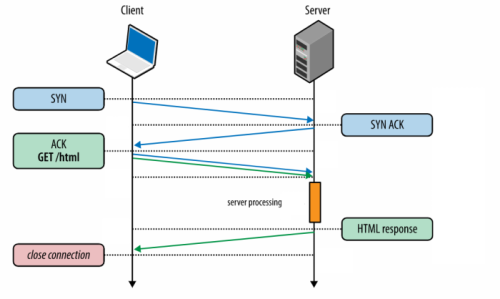

HTTP(S) protocol
HTTP on the client side usually use a
web browser that connects to a web server such
MS IIS
or
Apache HTTP ServerHTTP(application layer protocol) works on top of the TCP(transport layer
protocol), and because of that HTTP before sending its GET request have to wait the that the TCP connection is
established with the server(SYN ACK)

An HTTP message is formatted like this:
• Headers
\r\n •
\r\n • Message
Body
\r\nHow we can see at each end of line we have to add
\r\n
where:
◇
\r → carriage return or CR, moves the cursors to the beginning of the line
◇
\n → line feed or LF, moves the cursor down to the next line
◇
\r\n → is the
same of hitting enter on your keyboard
In the HTTP(S) protocol the newline how we have seen is
represented by “
\r\n” but in OSs not always:
in
Unix(Linux\OSX), a new line is denoted by “
\n”, also called
Line Feed, or
LF In
Windows, a new line is denoted using “
\r\n”,called
Carriage Return and Line Feed, or
CRLF
Difference between HTTP1.0 and HTTP1.1
HTTP 1.1 syntax implies also sending a
Host: header
in the request
HTTP 1.0 syntax we can skip the
Host:
header
Image from:
https://hpbn.co/http1x/